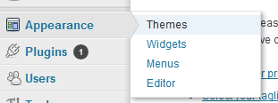
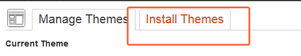
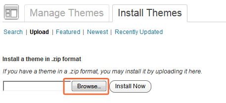

immersion
premium wordpress theme
- Created: 08/05/2012
- Version 1.2
- By: PixelBook
- pixelthemes.net/immersion/
- Email: pxlbook@gmail.com
Many thanks
Thank you for purchasing my theme. If you have any questions that are beyond the scope of this help file, please feel free to email via my user page contact form here. Thanks so much!
Installation
- immersion.zip - theme archive that you will need to upload to your wordpress installation.
- licensing folder - license for the theme.
- documentation folder - documentation files. To read the documentation you will need to open the index.html file but since your reading this it means that you already done that :) .
- xml demo content - the xml file that you can import to your wordpress installation. THis will create the posts, pages, comments, custom fields, terms, navigation menus and custom posts of the demo site. You can import this file by going to Tools -> Import
If you need help installing Wordpress see the link below:
http://codex.wordpress.org/Installing_WordPress




Once the theme is activated, you will see the new admin panel

Admin Panel

From here you can tweak the neccesary settings such as uploading the logo. Please make sure to click the 'Save All Changes' button after you finish.
General Settings:- upload a custom favicon 16x16 pixels png or gif format
- paste in your google analytics tracking code
- the custom css textfield allows you to type custom css code yourself to further customize the theme. This code will pe placed after the rest of the main css code of the theme
- select the default image gallery that will be converted into a fullscreen slideshow. At first this list will be blank because there are no image galleries created
- the slide interval is the milliseconds interval between the slides
- also select the transition effect between the slides
- upload the logo of the theme.
- adjust the left and top handlers to position the logo
- if you want to create a footer select a layout and type in a name then press the 'Create footer' button. You new footer will be created. You can create an unlimited number of footers and place them on any page or post. Keep reading below to learn how to add widgets to the footer and then assing that footer to a page or post
- type in the copyright text that will be dispayed in the bottom right corner of the screen
- select the social icons with Ctrl key or Cmd key on Mac. After this type in the the social url adresses
- the theme created 2 sidebars by default: Post Sidebar and Page Sidebar
- if you want to create other custom sidebars, type in a sidebar name then press the 'create sidebar' button. After this your new sidebar will be created and you can add widgets on it
Note: After theme activation please make sure that all the default theme settings are saved by clicking the 'Save All Changes' button from the admin panel

Adding menus
The theme supports two menus: the main navigation and the bottom menu on the bottom left corner of the page. You can create these menus by going to Appearance -> Menus subsection. From there create your menu and then select the created menu under the 'Theme Locations' window. (Note: don't assign dropdown items to the bottom menu because these won't be displayed)

Follow this video on how to create a menu in wordpress and add menu items to it. The video also shows how to add dropdown items.
Creating galleries
Galleries are the easiest way of grouping images together.
You can use created image galleries for:
- fullscreen slideshows. You can achieve this by going to the admin panel -> Slideshow section and selecting the default image gallery you wish to be applied as a fullscreen slideshow. It's recomended the images that will be used for the fullscreen slideshow to have a minimum width of 1200px (these images will be centered horizontally and vertically and they will resize according to the browser window).
- assign them as slideshows that will be attached to any gallery post format or shortcode.
- you can display the gallery inside the content of the page by using the Gallery shortcode.
This video will show you how to create a gallery.
In the above video we created a gallery containing 2 images. Like seen in the video you can upload multiple images at the same time, sort them by drag and drop, edit title names.
Creating a Footer
The theme support multiple footers. This means you can add different footers on different pages. You create footers by going to the Admin Panel -> Footer section.

Under the 'Create Footer' section you will need to select a footer layout and a footer name. For example if you want a four column footer you would select 1/4 1/4 1/4 1/4.
After typing in a footer name press the 'Create Footer' button, and of course the 'Save All Changes' button.
Your new footer is now created and you can add widgets to it.
Go to Appearance -> Widgets where the appropriate widget areas will be created. (ex: if a footer has 3 columns then 3 widget areas will be created). After you add widgets all that is left to do is go to a certain page or post and select that footer from the metabox below the text editor. If you don't select this, by default the first footer created will be displayed on pages or posts.

By default the first created footer will be displayed on all pages. If you want for example a different footer displayed on the Contact Page, create a new footer, add widgets to it and then go to your Contact Page and find the 'Footer Select' list under the 'Page Settings' metabox.

The 'Page Settings' metabox
The other important part of the theme besides the admin panel is the metabox called 'Page Settings' that is displayed on every post or page below the text editor.

Depending on the type (post, page, or portfolio project) some settings may be missing
These settings are:
Display Title: choose if you want to display the title on this page
Display Footer: choose if you want to display the footer on this page
Page Type: choose if you want this page to be a normal page or a blog page
Custom Sidebar: choose if you want a custom sidebar displayed on this page
Footer select: choose what footer to be displayed on this page
Select the gallery that will be displayed as a fullscreen slideshow on this page: I think the description is pretty obvious what this setting does :). Here you will find options like: off (this page won't have a fullscreen slideshow), default (this page will be using the default gallery as a fullscreen slideshow. If you don't remember, the default gallery is the one assigned in the Admin Panel -> Slideshow section), and the rest of the image galleries will be listed here as well.
The next 2 settings are slideshow related:
Show captions: choose if you want captions on the fullscreen slideshow.
Display the 'read more' link after the caption: choose if you want the 'read more' link to be displayed. If you choose to display this link the user will be able to reveal the rest of the page content by clicking on this link
Creating blog posts and portfolio projects
Creating blog posts and portfolio projects are two identical processes in wordpress.
You create them by clicking on the Posts -> Add New or Portfolio Projects -> Add New links in wordpress.

Type in a title, some page content, an excerpt (the text that will be displayed before you click the 'Continue Reading' link), select categories and a post format.
The post formats are:
-
Standard Post Format: which displays the featured image of the post or nothing if no featured image is uploaded. To select a featured image follow these steps
1. click the 'set featured' link

2. select 'from computer' if you want to upload a new image or 'media library' if you want to select an image already uploaded to wordpress

3. after the image is upload click the 'Set as featured image' and then close the window.

- Gallery Post Format: select this post format if you want a slideshow or just multiple images attached to this post. When clicking on the 'Gallery' post format other settings will be displayed in the 'Page Settings metabox'
- Image Post Format: the image post format behaves exactly like the Standard post format
- Video Post Format: You can choose between 3 types of videos: vimeo, youtube or html5 self hosted video. As before new settings will be displayed:


The settings are: 'Select gallery' (the image gallery that will be used for the slideshow), 'Slideshow Height' (since all the images from the slideshow need to have the same height), and Gallery Type (if you want a normal slideshow or just images stacked one below the other)

For youtube and vimeo videos you will only need the video id located in the ulr of the video page


For html5 videos you will need mp4(mpv), webm and ogv videos. Any .mp4 video will be enough. You can convert to video to the .webm format using free software like MiroVideoConverter. You will need all the three formats .mp4 .webm .ogv to ensure maximum compatibilty
- mp4: Supported by Webkit browsers (Safari, Chrome, iPhone/iPad) and Internet Explorer 9
- web: Supported by newer versions of Firefox, Chrome, and Opera.
- ogg: (optional - if the previous two aren't available) Supported by Firefox, Opera, Chrome, and newer versions of Safari. Unfortunately it's not as good as WebM and MP4.
After you uploaded the videos to you server, copy paste the urls to the coresponding fields under Page Settings. The flash source video url can be the same as the .mp4 url or it can have other formats like flv. The flash source will be used for devices that don't support HTML5 Video.
If the video doesn't play try adding these lines to the .htaacces file
AddType video/mp4 .mp4 AddType video/ogg .ogv AddType video/webm .webm
If you want to add a poster to the html5 video (the image displayed before you click the play button) you'll just need to add a featured image.
Creating a blog page
A blog page is the page where you can display the latest blog posts. To create a blog page go to Pages -> Add New then below the text editor select the 'Page Type' to 'blog page'. Other settings will be displayed like 'Post Categories' and 'Items per page'.

After you set this options click 'Publish'. The new page created will display the posts from the selected post categories.
Other settings will appear like 'Post Categories' (the categories that will be displayed on this page), 'Items per page' (the number of posts per page)
Note: this way you can create an unlimited number of blogs. For example if you want a 'news' section just create a blog page that displays only posts from the 'news' category
Note: if you want your homepage to display your latest posts just go visit the 'Settings' -> 'Reading' page and select 'a static page' then select the newly created blog page as the Front Page of your site
Using the Layout Manager
The Layout Manager easily lets you add columns to any post or page without the knowledge of any shortcode. It has been built because using column shortcodes to build layouts can easily become confusing especially when you place other shortcodes inside a column shortcode.

In the above picture I have created a 2 column layout, followed by a 3 column layout and then a 4 column layout.
Follow this video on how to use the Layout Manager
Like seen in the video you can create layouts very easily, change the order of columns and rows by drag and drop
Note: Use the layout manager only on newly created pages. When you add your first column the text from the text editor (html tab) will be deleted. As you start adding columns and filling them with content the text editor will be updated in real time with your selected column shortcodes.
You can easily disable the layout manager by clicking the 'Layout Manager' checkbox

This way you can add column shortcodes directly to the text editor (html tab). For example this code will create a 3 column layout:

Shortcodes
You can easily add shortcodes using the Add Shortcode subpanel. Select the desired shortcode, fill in the settings then click the Generate code button. The shortcode generator will automatically display the shortcode in the yellow textarea called 'Generated Code'. If you click the 'Generate Code' button and no code is displayed it means that you didn't fill in some required settings.

After you generate a shortcode just copy the code into your text editor (html tab), or in one of the textareas from the Layout Manager
The next video will show you how to add shortcodes and place them direcly in the layout manager. You can also place the shortcode directly in the html text editor but the layout manager will become useless on that page.
Note: Wordpress automatically adds unneccesary html tags on the output of shortcodes. Sometimes these tags can really screw up a shortcode. That's why it's recomended to use the [raw] shortcode to disable wordpress autoformating.
For example if you want to display a portfolio you might use this shortcode
[portfolio cats="6,7,4"]
But if you really want to be sure you don't experience any issue use this code instead
[raw][portfolio cats="6,7,4"][/raw]
Translate
The .po file is in 'immersion/languages' folder named 'immersion.po'You can use a program like poEdit to translate the theme. Download here After the installation open the .po file from the languages folder of the theme. Then begin translating all the words from the theme. Then click Save. The program will generate .mo and .po files that you will need to place in the languages folder. You should have wordpress installed in your language. To check the installed language you can open the wp-config.php file (from the wordpress directory) and search for 'define('WPLANG', '');'
For example if the installed language is spanish it should be like this 'define('WPLANG', 'sp_SP');' or for french like this 'define('WPLANG', 'fr_FR');'
After you found what language you have installed just rename the .mo and .po files from the languages folder like this: sp_SP.mo and sp_SP.po (or whatever language you have installed)
End
Once again, thank you so much for purchasing this theme. As I said at the beginning, I'd be glad to help you if you have any questions relating to this theme. If you have a more general question relating to the themes on ThemeForest, you might consider visiting asking your question in the "Item Discussion" section.